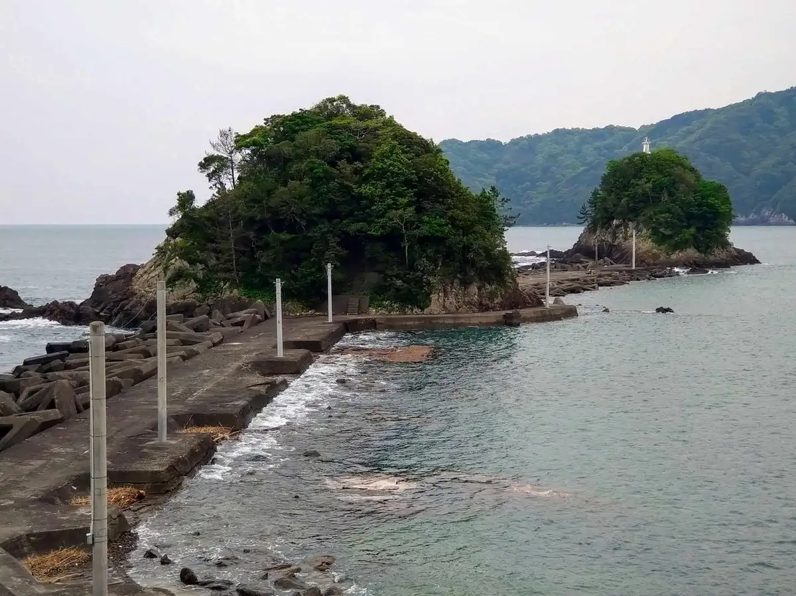
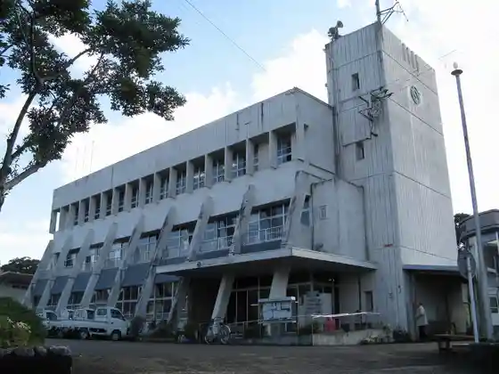
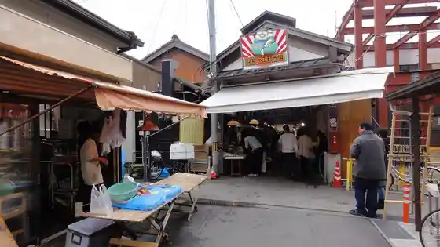
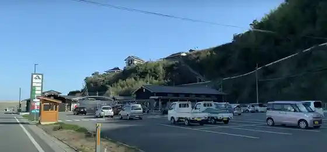
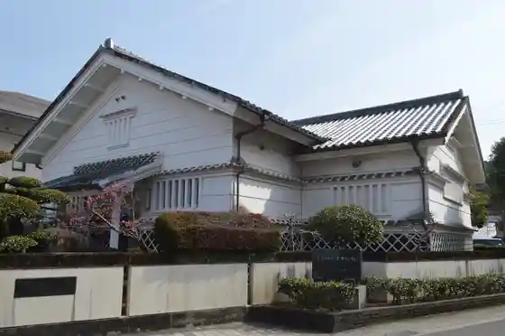

Nakatosa
Nakatosa · Kochi
Nakatosa
Highlighted on the Kochi map.

Stay
Shimanto Genryu Village
Dining
Market no Meshi Ya Hama Chan
O Konomi Yaki Ramen
Omoya
Sanuki
Kochi Ya
Hamayaki Ki Kaio
Kuroshio Workshop
Kushiyaki Pon Kichi
Washoku Utage Azuma
Sai Sho
Famirii Izakaya O Sozai Sumiyoshi Town
Ramen Hausu Cha I Na
Sights
So Mei Shima
Nakatosa Town Hall

Kure Taisho Town Market

Roadside Station Nakatosa

Nakatosa Ritsu Art Museum

Kure Hachiman Shrine
Kure Wan